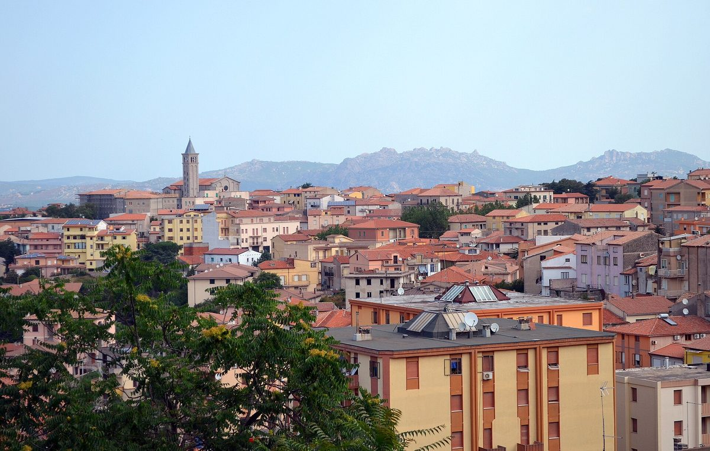

사르데냐 템피오파우사니아, 재생에너지공동체 만들려 시민·기업 참여 의향 조사 시작

소비자·생산소비자·생산자 세 갈래로 신청 받아 공동체 구성 가늠하는 첫 단계…발전 용량·예산은 공고에 없어
이탈리아 사르데냐섬 북부의 템피오파우사니아(Tempio Pausania) 시가 재생에너지공동체(CER)를 꾸리기 위해 10월 23일 시민·기업·기관과 공공·민간 단체를 대상으로 참여 의향 모집 공고를 냈다. 공동체를 곧바로 세우는 것이 아니라, 누가 얼마나 참여할 뜻이 있고 어떤 설비를 내놓을 수 있는지 파악해 시가 공동체 구성을 정하기 위한 첫 단계다. 참여 방식은 설비 없이 공동체가 나누는 전기를 쓰는 소비자, 스스로 만든 전기를 쓰고 남는 것을 공동체에 내놓는 생산·소비자, 발전 설비만 제공하는 생산자 세 가지다. 신청자는 시가 정한 서식에 신분증 사본과 연간 사용량 요약이 담긴 최근 전기요금 고지서를 붙여 공인 전자우편으로 내야 하고, 생산자나 생산·소비자로 참여하려면 건물 사진이나 지적도를 더 내야 한다. 공고에는 발전 용량과 예산, 마감일이 담기지 않았다.
시민에너지 관점
템피오파우사니아처럼 발전소부터 짓지 않고 주민의 참여 뜻과 전기 사용량, 내놓을 지붕부터 모으는 방식은 공동체의 주인을 먼저 정하는 순서라는 점에서 눈여겨볼 만하다. 시가 앞장서면 결국 관 주도 사업이 되지 않겠느냐는 우려가 있지만, 설비 없이 소비자로도 들어올 수 있게 문을 넓혀 두면 지붕이 없는 세입자와 소상공인도 회원이 될 수 있다. 의결권과 수익이 참여한 주민에게 돌아가도록 설계될 때 이 의향 조사는 지역이 소유하는 에너지의 출발점이 된다. 국내 지자체도 태양광 사업을 공고하기 전에 주민 참여 의향과 쓸 수 있는 지붕부터 조사하는 절차를 두어야 한다.
출처: 갈루라 오지(Gallura Oggi) 2026-10-23 Pietro Serra 원문 보기
サルデーニャのテンピオ・パウザーニア市、再生可能エネルギー共同体の設立に向け市民・企業の参加意向調査を開始
消費者・プロシューマー・生産者の3区分で申し込みを受け、共同体の構成を見極める第一段階…発電容量・予算は公告になし
イタリア・サルデーニャ島北部のテンピオ・パウザーニア（Tempio Pausania）市は、再生可能エネルギー共同体（CER）をつくるため、10月23日に市民・企業・機関や公共・民間の団体を対象とした参加意向の募集を公告した。すぐに共同体を立ち上げるのではなく、誰がどれだけ参加の意思を持ち、どのような設備を提供できるかを把握して、市が共同体の構成を決めるための第一段階だ。参加の形は、設備を持たずに共同体が分け合う電気を使う消費者、自ら発電した電気を使い余った分を共同体に出すプロシューマー、発電設備だけを提供する生産者の3種類がある。申込者は市所定の書式に、身分証明書の写しと年間使用量の概要が載った最新の電気料金請求書を添えて認証電子メールで提出し、生産者やプロシューマーとして参加する場合は建物の写真か地籍図も出す必要がある。公告には発電容量や予算、締め切りは示されていない。
市民エネルギーの視点
テンピオ・パウザーニアのように発電所を先に建てるのではなく、住民の参加意思と電力使用量、提供できる屋根から集めるやり方は、共同体の持ち主を先に決める順序だという点で注目に値する。市が先頭に立てば結局は行政主導の事業になるのではとの懸念もあるが、設備がなくても消費者として加われるよう門戸を広げておけば、屋根を持たない借家人や小規模事業者も会員になれる。議決権と収益が参加した住民に戻るよう設計されてこそ、この意向調査は地域が所有するエネルギーの出発点になる。韓国の自治体も、太陽光事業を公告する前に住民の参加意向と使える屋根から調べる手続きを設けるべきだ。
出典: ガッルーラ・オッジ（Gallura Oggi） 2026-10-23 Pietro Serra 原文を読む
撒丁岛Tempio Pausania市为组建可再生能源社区启动市民和企业参与意向调查
按消费者、产消者、生产者三类接受申请，作为确定社区构成的第一步…公告未列发电容量和预算
意大利撒丁岛北部的Tempio Pausania市为组建可再生能源社区（CER），于10月23日发布公告，面向市民、企业、机构以及公共和民间团体征集参与意向。这并不是马上成立社区，而是先摸清谁愿意参与、参与程度如何、能提供哪些设施，以便市政府确定社区构成的第一步。参与方式分为三种：不拥有设施、使用社区共享电力的消费者；自用自产电力并把余电提供给社区的产消者；只提供发电设施的生产者。申请人须在市政府规定的表格上附上身份证件复印件和载有年度用电量摘要的最近一期电费单，通过认证电子邮件提交；以生产者或产消者身份参与的，还须提交建筑照片或地籍图。公告中没有列出发电容量、预算和截止日期。
市民能源视角
像Tempio Pausania这样不先建电站、而是先收集居民的参与意愿、用电量和可提供的屋顶，这种先确定社区主人的顺序值得关注。有人担心市政府牵头最终会变成官方主导的项目，但只要把门开大、让没有设施的人也能以消费者身份加入，没有屋顶的租户和小商户也能成为会员。只有当表决权和收益被设计为回到参与的居民手中，这次意向调查才会成为地方自有能源的起点。韩国地方政府也应在发布光伏项目公告之前，先设立调查居民参与意向和可用屋顶的程序。
来源: Gallura Oggi 2026-10-23 Pietro Serra 查看原文
Sardinian town of Tempio Pausania opens call for expressions of interest from residents and businesses to form a renewable energy community
Applications taken in three categories, consumer, prosumer and producer, as a first step to gauge the community's make-up; the notice sets no capacity or budget
The municipality of Tempio Pausania in northern Sardinia published a call on October 23 for expressions of interest from residents, businesses, institutions and other public and private bodies with a view to forming a renewable energy community (CER). Rather than setting up the community straight away, it is a first step to find out who is willing to take part and what installations they could offer, so that the council can decide how the community will be made up. There are three ways to join: as a consumer using electricity shared by the community without owning a system, as a prosumer using self-generated power and offering the surplus to the community, or as a producer providing only a generating installation. Applicants must send the council's form by certified email together with a copy of an identity document and their latest electricity bill including the annual consumption summary, and those joining as producers or prosumers must also submit a photograph of the building or its cadastral plan. The notice does not state a generating capacity, a budget or a deadline.
Citizen Energy View
Instead of building a plant first, Tempio Pausania is starting by collecting residents' willingness to take part, their consumption and the roofs they can offer, an order that settles who will own the community before anything is built. Some worry that a council-led start will end up as a top-down project, but keeping the door open to consumers without their own systems lets tenants and small shops without roofs become members too. If voting rights and income are designed to flow back to the residents who join, this survey can become the starting point for locally owned energy. Korean local governments should likewise survey residents' interest and usable roofs before announcing solar projects.
Source: Gallura Oggi 2026-10-23 Pietro Serra Read the original